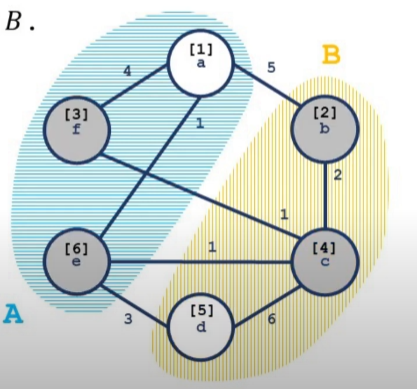

OI Wiki · prijevod · Teorija grafovaOI Wiki · translation · Graph theory
Stoer–Wagnerov algoritamStoer–Wagner algorithm
Sadržaj
Definicije
Budući da smo napustili definiciju izvora i ponora, moramo iznova definirati pojam reza.
(Zapravo se definicija reza iz poglavlja o tokovima ne podudara s onom na Wikipediji; samo zato što su rezovi s kojima se obično susrećemo „problem minimalnog reza s izvorom i ponorom”, taj se pojam ustalio.)
Rez
Skup bridova čijim uklanjanjem mreža prestaje biti povezana (tj. raspada se na dva podgrafa) zove se rez grafa.
Formalno: u neusmjerenom grafu \(G = (V, E)\) neka je \(C\) skup nekih lukova grafa \(G\); ako brisanjem svih lukova iz \(C\) graf \(G\) prestaje biti povezan, \(C\) zovemo rezom grafa \(G\).
Problem minimalnog reza s izvorom i ponorom
Jednako kao definicija u Minimalni rez.
Problem minimalnog reza bez izvora i ponora
Rez čiji je zbroj težina lukova najmanji. Zove se i globalni minimalni rez.
Očito, složenost izravnog pokretanja algoritma za tok ovdje nije prihvatljiva.
Stoer–Wagnerov algoritam
Uvod
Stoer–Wagnerov algoritam predložili su 1995. Mechthild Stoer i Frank Wagner; to je algoritam koji rekurzivno rješava problem globalnog minimalnog reza na neusmjerenim grafovima s pozitivnim težinama.
Svojstva
Složenost algoritma je \(O(|V||E| + |V|^{2}\log|V|)\), što se obično približno smatra \(O(|V|^3)\).
Implementacija se temelji na sljedećoj osnovnoj činjenici: neka su \(S, T\) bilo koja dva vrha grafa \(G\). Tada za svaki rez \(C\) grafa \(G\) vrijedi ili da su \(S, T\) u istoj komponenti povezanosti, ili da je \(C\) jedan \({S-T}\) rez.
Postupak
- U grafu \(G\) proizvoljno odaberemo dva vrha \(s, t\), uzmemo ih kao izvor i ponor te izračunamo \(S-T\) minimalni rez grafa \(G\) (nazovimo ga cut of phase) i ažuriramo trenutni odgovor.
- „Spojimo” vrhove \(s, t\); ako je \(|V|\) u grafu \(G\) veći od \(1\), vratimo se na prvi korak.
- Ispišemo najmanji od svih cut of phase.
Spajanje vrhova \(s, t\): brišemo brid \((s, t)\) između \(s\) i \(t\); za svaki vrh \(k\) iz \(G \setminus \{s, t\}\) brišemo \((t, k)\) i njegovu težinu \(d(t, k)\) pribrajamo težini \(d(s, k)\).
Objašnjenje: ako su \(s, t\) u istoj komponenti, tada za vrh \(k\) iz \(G \setminus \{s, t\}\), ako je \((k, s) \in C_{\min}\), nužno vrijedi i \((k, t) \in C_{\min}\); inače bi, jer su \(s, t\) povezani i \(k, t\) povezani, \(s, k\) bili u istoj komponenti, pa bi \(C = C_{\min} \setminus \{(t, k)\}\) bio bolji od \(C_{\min}\). Vrijedi i obrnuto. Stoga \(s, t\) možemo promatrati kao jedan vrh.
Korak 1 pokriva slučaj kad \(s,t\) nisu u istoj komponenti, a korak 2 preostale slučajeve. Budući da svako izvođenje koraka 2 smanjuje \(|V|\) za \(1\), algoritam završava nakon \(|V| - 1\) koraka.
Računanje S-T minimalnog reza
(Očito ne tokom.)
Pretpostavimo da je nakon nekoliko spajanja trenutni graf \(G'=(V', E')\) i izvodimo korak 1.
Gradimo skup \(A\); na početku \(A = \varnothing\).
U svakom koraku u \(A\) dodajemo onaj vrh iz \(V'\) koji zadovoljava \(i \notin A\) i ima najveću vrijednost težinske funkcije \(w(A, i)\), sve dok \(|A| = |V'|\).
Pritom je težinska funkcija definirana kao:
\(w(A, i) = \sum_{j \in A} d(i, j)\)
(ako \((i, j) \notin E'\), onda \(d(i, j) = 0\)).
Lako se vidi da je redoslijed dodavanja vrhova u \(A\) jednoznačan; neka \(\operatorname{ord}(i)\) označava \(i\)-ti vrh dodan u \(A\), \(t = \operatorname{ord}(|V'|)\); a \(\operatorname{pos}(v)\) veličinu \(|A|\) nakon dodavanja \(v\) u \(A\), tj. redni broj dodavanja vrha \(v\).
Tada je za bilo koji vrh \(s\) jedan rez između \(s\) i \(t\) upravo \(w(t)\).
Dokaz
Kažemo da je vrh \(v\) aktiviran ako i samo ako u trenutku dodavanja \(v\) u \(A\) posljednji vrh \(u\) koji je tada u \(A\) dodan ranije od \(v\) i u grafu \(G'' = (V', E'/C)\) \(u\) i \(v\) nisu u istoj komponenti.

Na slici plavo i žuto područje dvije su različite komponente, a brojevi u uglatim zagradama redoslijed dodavanja u \(A\). Sivi su vrhovi aktivni, a bijeli nisu.
Definiramo \(A_v = \{u \mid \operatorname{pos}(u) < \operatorname{pos}(v)\}\), tj. vrhove dodane u \(A\) strogo prije \(v\), i neka je \(E_v\) skup bridova induciranog podgrafa od \(E'\) (sa skupom vrhova \(A_v \cup\{v\}\)). (Uočite da uključuje vrh \(v\).)
Definiramo inducirani rez \(C_v\) kao \(C \cap E_v\). \(w(C_v) = \sum_{(i,j) \in C_v} d(i, j)\).
Lema 1
Za svaki aktivirani vrh \(v\) vrijedi \(w(A_v, v) \le w(C_v)\).
Dokaz: matematičkom indukcijom.
Za prvi aktivirani vrh \(v_0\) po definiciji vrijedi \(w(A_{v_0}, v_0) = w(C_{v_0})\).
Za dva kasnija aktivirana vrha \(u, v\), uz pretpostavku \(\operatorname{pos}(v) < \operatorname{pos}(u)\), vrijedi:
\(w(A_u, u) = w(A_v, u) + w(A_u - A_v, u)\)
Nadalje, znamo:
\(w(A_v, u) \le w(A_v, v)\) i \(w(A_v, v) \le w(C_v)\), pa zajedno dobivamo:
\(w(A_u, u) \le w(C_v) + w(A_u - A_v, u)\)
Budući da \(w(A_u - A_v, u)\) doprinosi \(w(C_u)\), a ne doprinosi \(w(C_v)\), uz pozitivne težine svih bridova slijedi:
\(w(A_u,u) \le w(C_u)\)
Čime je indukcija dovršena.
Budući da je \(\operatorname{pos}(s) < \operatorname{pos}(t)\) i da \(s, t\) nisu u istoj komponenti, \(t\) će biti aktiviran, odakle slijedi \(w(A_t, t) \le w(C_t) = w(C)\).
P5632 [Predložak] Stoer–Wagnerov algoritam
#include <cstring>
#include <iostream>
using namespace std;
constexpr int N = 601;
int fa[N], siz[N], edge[N][N];
int find(int x) { return fa[x] == x ? x : fa[x] = find(fa[x]); }
int dist[N], vis[N], bin[N];
int n, m;
int contract(int &s, int &t) { // Pronađi s, t
memset(dist, 0, sizeof(dist));
memset(vis, false, sizeof(vis));
int i, j, k, mincut, maxc;
for (i = 1; i <= n; i++) {
k = -1;
maxc = -1;
for (j = 1; j <= n; j++)
if (!bin[j] && !vis[j] && dist[j] > maxc) {
k = j;
maxc = dist[j];
}
if (k == -1) return mincut;
s = t;
t = k;
mincut = maxc;
vis[k] = true;
for (j = 1; j <= n; j++)
if (!bin[j] && !vis[j]) dist[j] += edge[k][j];
}
return mincut;
}
constexpr int inf = 0x3f3f3f3f;
int Stoer_Wagner() {
int mincut, i, j, s, t, ans;
for (mincut = inf, i = 1; i < n; i++) {
ans = contract(s, t);
bin[t] = true;
if (mincut > ans) mincut = ans;
if (mincut == 0) return 0;
for (j = 1; j <= n; j++)
if (!bin[j]) edge[s][j] = (edge[j][s] += edge[j][t]);
}
return mincut;
}
int main() {
ios::sync_with_stdio(false), cin.tie(nullptr);
cin >> n >> m;
if (m < n - 1) {
cout << 0;
return 0;
}
for (int i = 1; i <= n; ++i) fa[i] = i, siz[i] = 1;
for (int i = 1, u, v, w; i <= m; ++i) {
cin >> u >> v >> w;
int fu = find(u), fv = find(v);
if (fu != fv) {
if (siz[fu] > siz[fv]) swap(fu, fv);
fa[fu] = fv, siz[fv] += siz[fu];
}
edge[u][v] += w, edge[v][u] += w;
}
int fr = find(1);
if (siz[fr] != n) {
cout << 0;
return 0;
}
cout << Stoer_Wagner();
return 0;
}
Analiza složenosti i optimizacije
Složenost operacije contract je \(O(|E| + |V|\log|V|)\).
Ukupno se izvodi \(O(|V|)\) operacija contract, pa je ukupna složenost \(O(|E||V| + |V|^2\log|V|)\).
Prema iskustvu s najkraćim putovima, usko grlo algoritma je pronalaženje vrha s najvećom težinom.
U jednom contract treba \(|V|\) puta dohvatiti vrh gomile (heap) i \(|E|\) puta povećati težinu.
Fibonaccijeva gomila može obaviti dohvat vrha u \(O(\log|V|)\) i povećanje težine u \(O(1)\), pa teorijska složenost može dosegnuti \(O(|E| + |V|\log|V|)\); no zbog velike konstante i količine koda Fibonaccijeve gomile njezina je praktična vrijednost mala.
(U stvarnim testovima treba uključiti O2 i još imati sreće s fluktuacijama ocjenjivača da bi prošlo.)
Contents
Definitions
Since we drop the notion of a source and sink, we need to redefine the concept of a cut.
(In fact, the definition of a cut in the network flow chapters does not match Wikipedia's; it is only because the cuts one usually meets are the "minimum cut problem with source and sink" that this usage has become conventional.)
Cut
A set of edges whose removal makes a flow network disconnected (i.e. splits it into two subgraphs) is called a cut of the graph.
That is: in an undirected graph \(G = (V, E)\), let \(C\) be a set of arcs of \(G\); if deleting all arcs in \(C\) from \(G\) makes \(G\) disconnected, \(C\) is called a cut of \(G\).
Minimum cut problem with source and sink
Same as the definition in Minimum cut.
Minimum cut problem without source and sink
The cut whose arcs have the smallest total weight. Also called the global minimum cut.
Obviously, the complexity of running a network flow directly is not acceptable here.
Stoer–Wagner algorithm
Introduction
The Stoer–Wagner algorithm was proposed in 1995 by Mechthild Stoer and Frank Wagner; it is an algorithm that solves the global minimum cut problem on undirected graphs with positive weights by recursion.
Properties
The algorithm's complexity is \(O(|V||E| + |V|^{2}\log|V|)\), usually approximated as \(O(|V|^3)\).
Its implementation rests on the following basic fact: let \(S, T\) be any two vertices of the graph \(G\). Then for any cut \(C\) of \(G\), either \(S, T\) lie in the same connected component, or \(C\) is an \({S-T}\) cut.
Procedure
- Pick any two vertices \(s, t\) in \(G\), take them as source and sink and compute the \(S-T\) minimum cut of \(G\) (call it the cut of phase); update the current answer.
- "Merge" the vertices \(s, t\); if \(|V|\) in \(G\) is greater than \(1\), go back to step 1.
- Output the minimum over all cuts of phase.
Merging two vertices \(s, t\): delete the edge \((s, t)\) between \(s\) and \(t\); for every vertex \(k\) in \(G \setminus \{s, t\}\), delete \((t, k)\) and add its weight \(d(t, k)\) to \(d(s, k)\).
Explanation: if \(s, t\) are in the same connected component, then for a vertex \(k\) in \(G \setminus \{s, t\}\), if \((k, s) \in C_{\min}\), then necessarily \((k, t) \in C_{\min}\) as well; otherwise, since \(s, t\) are connected and \(k, t\) are connected, \(s, k\) would be in the same component, and then \(C = C_{\min} \setminus \{(t, k)\}\) would be better than \(C_{\min}\). And vice versa. Hence \(s, t\) can be regarded as a single vertex.
Step 1 handles the case where \(s,t\) are not in the same component, and step 2 handles the remaining cases. Since every execution of step 2 decreases \(|V|\) by \(1\), the algorithm terminates after \(|V| - 1\) rounds.
Computing the S-T minimum cut
(Obviously not with network flow.)
Suppose that after several merges the current graph is \(G'=(V', E')\) and we perform step 1.
We build a set \(A\), initially \(A = \varnothing\).
Each time we add to \(A\) the vertex of \(V'\) with \(i \notin A\) that maximizes the weight function \(w(A, i)\), until \(|A| = |V'|\).
Here the weight function is defined as:
\(w(A, i) = \sum_{j \in A} d(i, j)\)
(if \((i, j) \notin E'\), then \(d(i, j) = 0\)).
It is easy to see that the order in which vertices join \(A\) is fixed; let \(\operatorname{ord}(i)\) denote the \(i\)-th vertex added to \(A\), \(t = \operatorname{ord}(|V'|)\); and let \(\operatorname{pos}(v)\) denote the size of \(|A|\) after \(v\) is added to \(A\), i.e. the order in which \(v\) was added.
Then for any vertex \(s\), one cut between \(s\) and \(t\) is \(w(t)\).
Proof
A vertex \(v\) is said to be activated if and only if, at the time \(v\) joins \(A\), the last vertex \(u\) currently in \(A\) joined earlier than \(v\), and in the graph \(G'' = (V', E'/C)\), \(u\) and \(v\) are not in the same connected component.
In the figure, the blue and yellow regions are two different connected components, and the numbers in square brackets are the order of joining \(A\). Gray vertices are active vertices, white ones are not.
Define \(A_v = \{u \mid \operatorname{pos}(u) < \operatorname{pos}(v)\}\), i.e. the vertices added to \(A\) strictly before \(v\), and let \(E_v\) be the edge set of the subgraph of \(E'\) induced by the vertex set \(A_v \cup\{v\}\). (Note that it includes the vertex \(v\).)
Define the induced cut \(C_v\) as \(C \cap E_v\). \(w(C_v) = \sum_{(i,j) \in C_v} d(i, j)\).
Lemma 1
For every activated vertex \(v\), \(w(A_v, v) \le w(C_v)\).
Proof: by mathematical induction.
For the first activated vertex \(v_0\), by definition \(w(A_{v_0}, v_0) = w(C_{v_0})\).
For two later activated vertices \(u, v\), assuming \(\operatorname{pos}(v) < \operatorname{pos}(u)\), we have:
\(w(A_u, u) = w(A_v, u) + w(A_u - A_v, u)\)
Moreover, we know:
\(w(A_v, u) \le w(A_v, v)\) and \(w(A_v, v) \le w(C_v)\); combining them gives:
\(w(A_u, u) \le w(C_v) + w(A_u - A_v, u)\)
Since \(w(A_u - A_v, u)\) contributes to \(w(C_u)\) but not to \(w(C_v)\), with all edge weights positive we can derive:
\(w(A_u,u) \le w(C_u)\)
This completes the induction.
Since \(\operatorname{pos}(s) < \operatorname{pos}(t)\) and \(s, t\) are not in the same connected component, \(t\) will be activated, from which we get \(w(A_t, t) \le w(C_t) = w(C)\).
P5632 [Template] Stoer–Wagner algorithm
#include <cstring>
#include <iostream>
using namespace std;
constexpr int N = 601;
int fa[N], siz[N], edge[N][N];
int find(int x) { return fa[x] == x ? x : fa[x] = find(fa[x]); }
int dist[N], vis[N], bin[N];
int n, m;
int contract(int &s, int &t) { // Find s,t
memset(dist, 0, sizeof(dist));
memset(vis, false, sizeof(vis));
int i, j, k, mincut, maxc;
for (i = 1; i <= n; i++) {
k = -1;
maxc = -1;
for (j = 1; j <= n; j++)
if (!bin[j] && !vis[j] && dist[j] > maxc) {
k = j;
maxc = dist[j];
}
if (k == -1) return mincut;
s = t;
t = k;
mincut = maxc;
vis[k] = true;
for (j = 1; j <= n; j++)
if (!bin[j] && !vis[j]) dist[j] += edge[k][j];
}
return mincut;
}
constexpr int inf = 0x3f3f3f3f;
int Stoer_Wagner() {
int mincut, i, j, s, t, ans;
for (mincut = inf, i = 1; i < n; i++) {
ans = contract(s, t);
bin[t] = true;
if (mincut > ans) mincut = ans;
if (mincut == 0) return 0;
for (j = 1; j <= n; j++)
if (!bin[j]) edge[s][j] = (edge[j][s] += edge[j][t]);
}
return mincut;
}
int main() {
ios::sync_with_stdio(false), cin.tie(nullptr);
cin >> n >> m;
if (m < n - 1) {
cout << 0;
return 0;
}
for (int i = 1; i <= n; ++i) fa[i] = i, siz[i] = 1;
for (int i = 1, u, v, w; i <= m; ++i) {
cin >> u >> v >> w;
int fu = find(u), fv = find(v);
if (fu != fv) {
if (siz[fu] > siz[fv]) swap(fu, fv);
fa[fu] = fv, siz[fv] += siz[fu];
}
edge[u][v] += w, edge[v][u] += w;
}
int fr = find(1);
if (siz[fr] != n) {
cout << 0;
return 0;
}
cout << Stoer_Wagner();
return 0;
}
Complexity analysis and optimizations
The complexity of the contract operation is \(O(|E| + |V|\log|V|)\).
A total of \(O(|V|)\) contract operations are performed, for a total complexity of \(O(|E||V| + |V|^2\log|V|)\).
Going by experience with shortest paths, the bottleneck of the algorithm is finding the vertex with the largest weight.
In one contract we need to fetch the top of the heap \(|V|\) times and increase weights \(|E|\) times.
A Fibonacci heap can do the top fetch in \(O(\log|V|)\) and the increase in \(O(1)\), so the theoretical complexity can reach \(O(|E| + |V|\log|V|)\); however, because of the Fibonacci heap's large constant factor and code size, its practical value is low.
(In actual tests you need O2 and some luck with judge fluctuations to pass.)